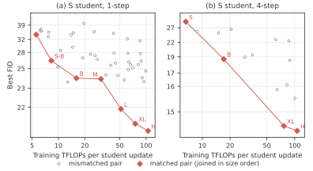

How large should the critic be?
Scale it together with the teacher.
Scaling the teacher while keeping a small critic fixed can degrade the student and even collapse training. Scaling the critic alongside the teacher, which we call joint scaling, lets the same student benefit from larger teachers, and matched teacher–critic pairs offer a favorable quality–compute tradeoff.

Hover over or tap a point to see its run. With a keyboard, tab to the figure and use the arrow keys.